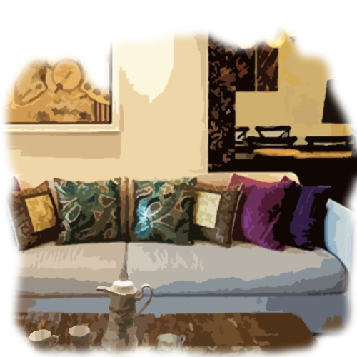

따라간다
당신은 그녀를 아파트 단지안으로 따라들어가고 그녀는 당신뒤에있는 게이트를 닫는다. 그녀는 그녀의 입술위로 손가락을 들었고 그녀를 따라오라는 손짓을 한다. 그녀는 희미하게 빛나는 노란 벽과 문(똑같이보이는) 복도쪽으로 계단을 타고 올라갔다. 그녀는 몇번을 더 돌더니 두번을 더 올라갔고, 어떤 방 앞에 멈췄다.
똑 똑 멈춤 똑.
시간이 지나고, 그녀는 문을 열었지만 안에는 아무도 없었다. 당신은 그녀와 함꼐 걸어들어갔고 당신뒤의 문을 잠궜다. 당신은 인센스의 향과 다채로운 베개들과 아늑한 거실들에 살짝 기뻐졌다. 방가운데에는 티셋트가 있고, 오리엔탈 패턴으로 방은 꾸며져있다.
"당신집이에요?" 당신이 물었다.
"여긴 나의 회사에 가깝지." 그녀가 말했다. "환영해, 내이름은 마마안느야. 그냥 마마라 불러도돼. 편하게 앉고."
당신이 소파에 앉자, 그녀도 당신옆에 앉아 물어보았다.
"뭐가 너를 이밤에 두리번거리게 만들었어?"